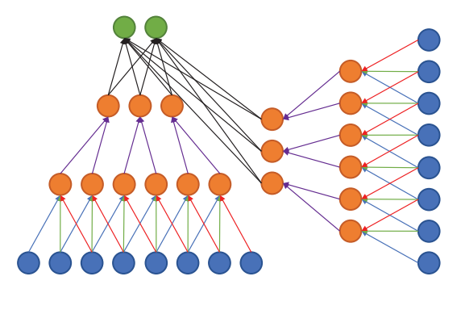
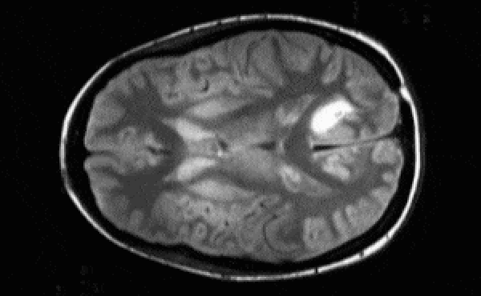

Journal Club — A presentation on:
Litjens, Kooi, Bejnordi, Setio, Ciompi, Ghafoorian, van der Laak, van Ginneken, and Sánchez (Medical Image Analysis 2017) “A Survey on Deep Learning in Medical Image Analysis.”
Tulane University Center for Bioinformatics and Genomics
Alexej Gossmann
April 11, 2018
“ This paper reviews the major deep learning concepts pertinent to medical image analysis and summarizes over 300 contributions to the field, most of which appeared in the last year [through Feb. 2017].”
Disclaimer
This presentation is a summary of a paper, which itself is a summary of other >300 papers...
Information presented here may be incomplete ...
Check the original survey paper for full references to the 308 surveyed papers: https://arxiv.org/abs/1702.05747
Litjens, Geert, Thijs Kooi, Babak Ehteshami Bejnordi, Arnaud Arindra Adiyoso Setio, Francesco Ciompi, Mohsen Ghafoorian, Jeroen A. W. M. van der Laak, Bram van Ginneken, and Clara I. Sánchez. 2017. “A Survey on Deep Learning in Medical Image Analysis.” Medical Image Analysis 42 (December): 60–88.

Adapted from: Litjens, Geert, Thijs Kooi, Babak Ehteshami Bejnordi, Arnaud Arindra Adiyoso Setio, Francesco Ciompi, Mohsen Ghafoorian, Jeroen A. W. M. van der Laak, Bram van Ginneken, and Clara I. Sánchez. 2017. “A Survey on Deep Learning in Medical Image Analysis.” Medical Image Analysis 42 (December): 60–88.
Medical Image Analysis
- 1970-1990
- Rule-based image processing & expert systems
- 1990s
- Supervised machine learning in medical imaging (atlas based methods, handcrafted features, pattern recognition, statistical classifiers)
- ≈2012-now
- Transition to deep learning
Deep Learning Methods Review
Neural Network
NN: Comprised of units that have activations $a = \sigma(\mathbf{w}^T \mathbf{x} + b)$, where $\sigma$ is called transfer function (sigmoid, softmax, ReLU, etc.).
MLP: Multi-layer perceptron or "vanilla" NN is given by
$f(\mathbf{x}; \Theta) = \sigma(W^{(L)} \sigma(W^{(L-1)} \ldots \sigma(W^{(1)} \mathbf{x} + b^{(1)})\ldots) + b^{(L)})$
Optimization via stochastic gradient descent (SGD): use minibatches for each step of descent instead of the entire dataset.
- "Vanilla" Neural Network:

- Universality theorem:
a neural network can compute any function.
(e.g., read this)

"Vanilla" Neural Network
Downsides:
- Hard to train efficiently.
- In medical imaging we are typically not interested in the optimized cost function directly (maximal likelihood, categorical cross-entropy). Measures such as AUC (for classification) or Dice coefficient (for segmentation) are more relevant.
Convolutional Neural Network
At the $l$th convolutional layer the input is convolved with $K$ kernels, each generating a new features map
$X^{(l)}_k = \sigma(W^{(l-1)}_k \ast X^{(l-1)} + b^{(l)}_k)$,
for $k = 1, \ldots, K$.
 Animation source (and an excellent guide on convolutions):
Animation source (and an excellent guide on convolutions):
https://github.com/vdumoulin/conv_arithmetic
$\leadsto$ Shared weights, invariance properties, drastically fewer parameters, smaller memory footprint, etc.
+ Pooling layers (fewer parameters, regularization, etc.)
Convolutional Neural Network

Important deep CNN architectures
- LeNet & AlexNet: $\leq 2012$, $\leq 5$ layers.
- After 2012: Deeper architectures, smaller kernels.
- 2014: 19-layer VGG19, or OxfordNet, won the ImageNet challenge.
- 2014: 22-layer GoogLeNet, or Inception, introduces inception blocks to improve basic convolutions.
- 2015: ResNet with $>100$ layers. Introduces residual blocks (which learn the residual, similar to boosting).
- In Medical Imaging most people seem to favor the GoogLeNet Inception v3 architecture of 2017.
Multi-stream architectures
Multiple sources/representations/scales/channels as input. Can be merged at any point in the network.
Litjens, Geert, Thijs Kooi, Babak Ehteshami Bejnordi, Arnaud Arindra Adiyoso Setio, Francesco Ciompi, Mohsen Ghafoorian, Jeroen A. W. M. van der Laak, Bram van Ginneken, and Clara I. Sánchez. 2017. “A Survey on Deep Learning in Medical Image Analysis.” Medical Image Analysis 42 (December): 60–88.
Segmentation architectures
- CNN can be used to classify each pixel/voxel individually. $\leadsto$ Computationally wasteful.
- Fully connected layers can be rewritten as convolutions. $\leadsto$ fCNN. $\leadsto$ Can be trained to produce a likelihood map.
- U-net architecture: fCNN followed by up-sampling to restore the original image size + skip connections + residual blocks.

Segmentation architectures

Ronneberger, Fischer, Brox. 2015. "U-Net: Convolutional Networks for Biomedical Image Segmentation." Medical Image Computing and Computer-Assisted Intervention (MICCAI), Springer, LNCS, Vol.9351: 234--241.
Recurrent Neural Network
- Discrete sequence analysis. E.g., classification based on a sequence $x_1, x_2, \ldots, x_T$ rather than a single input $x$.
- Hidden (or latent) state at time $t$:
$\mathbf{h}_t = \sigma(W\mathbf{x}_t + R\mathbf{h}_{t-1} + \mathbf{b})$. - Inherent depth in time makes plain RNNs hard to train $\leadsto$ Long Short Term Memory cell (or LSTM, 1997) and Gated Recurrent Unit (2014) solve the problem.
- Image analysis: autoregressive models, generative models, certain segmentation problems.
Unsupervised models
(Stacked) Autoencoder: learn a low-dimensional representation of the data.

Unsupervised models
 Restricted Bolzmann Machine (RBM): Markov Random Field with visible layer $\mathbf{x}$ and hidden layer $\mathbf{h}$ (a latent representation).
Restricted Bolzmann Machine (RBM): Markov Random Field with visible layer $\mathbf{x}$ and hidden layer $\mathbf{h}$ (a latent representation).
Deep Belief Network (DBN): Composition of multiple RBMs.
Deep Learning Uses in Medical Imaging
- Image/Exam Classification
- Object or Lesion Classification
- Organ, region, and landmark detection
- Object or lesion detection
- Organ and substructure segmentation
- Lesion segmentation
- Registration
- Content-based image retrieval
- Image generation and enhancement
- Combining Image Data With Reports
Adapted from Litjens et al. (2017).
1. Image/Exam Classification
- Input: Exam Images.
- Output: A single diagnostic outcome.
1. Image/Exam Classification
- Initially SAEs and RBMs. E.g., Pils et al. (2014).
- Recently shift towards CNNs (36/47 papers in 2015-16) with applications in brain MRI, retinal imaging, digital pathology, lung CT.
- Innovation:
- Hosseini-Asl et al. (2016) use 3D convolution instead of the 2D convolution.
- Kawahara et al. (2016) CNN on brain connectivity graph derived from MRI diffusion-tensor imaging, to predict brain development.
1. Image/Exam Classification
- Transfer learning (i.e., use of pre-trained networks) is popular — two strategies:
- As feature extractor, to plug into existing image analysis pipelines.
- For fine-tuning the last layers on medical data.
1. Image/Exam Classification
Feature extractor vs. fine-tuning approach.
- Antony et al. (2016): fine-tuning outperformed feature extraction on knee osteoarthritis assessment.
- Kim et al. (2016): CNN as feature extractor outperformed fine-tuning in cytopathology image classification.
- Esteva et al. (2017) and Gulshan et al. (2016): (near) human expert level performance with fine-tuning Inception v3. Unmatched by the feature extractor approach yet.
2. Object or Lesion Classification
- Classification of a previously identified part of the image into two or more classes (e.g. nodule classification in chest CT).
- Local and global information need to be combined. Typically not possible with generic DL architectures.
- Multi-stream architectures are used to combine local information of lesion appearance with contextual or global information of lesion location.
2. Object or Lesion Classification
- Shen et al. (2015) use three CNNs, each with different scale input, and concatenate the outputs for final classification.
- Setio et al. (2016) use 9 differently oriented patches of a 3D image in separate CNN streams. The 9 streams are merged in the fully connected layers.
3. Organ, region, and landmark detection
- Anatomical object/organ/landmark localization in space or time, for preprocessing or segmentation.
- Challenge: 3D data parsing.
- Approach: View the localization problem as a classification task; then generic deep learning architectures can be used.
- Yang et al. (2015): Three sets of 2D MRI slices (one set for each plane) are processed with regular CNNs. Select the three 2D slices with the highest classification output. Their intersection is the 3D position of the landmark.
- De Vos et al. (2016): 3D bounding box is constructed from analysing 2D slices with regular pre-trained CNNs.
3. Organ, region, and landmark detection
- Very few methods address the direct localization of landmarks in 3D image space.
- Other approaches include LSTM-RNN to exploit temporal information in medical videos (e.g., Chen et al. 2015), LSTM-RNN combined with CNN (Kong et al. 2016), reinforcement learning (Ghesu et al. 2016).
4. Object or lesion detection
- Typically many small lesions in the full image — lesion detection is one of the most labor intensive parts in diagnosis for clinicians.
- Most published DL systems still use pixel (or voxel) classification (i.e., a separate classification task performed at each pixel/voxel).
- Difficulties due to class imbalance (most pixels are not lesions).
4. Object or lesion detection
- Most published DL systems still use pixel (or voxel) classification (i.e., a separate classification task performed at each pixel/voxel).
- Typically in a sliding window fashion ($\leadsto$ a lot of redundant computation).
- Incorporation of contextual or 3D information using multi-stream CNNs (e.g., Brabu et al. 2016, Roth et al. 2016)
4. Object or lesion detection
Innovation
- Teramoto et al. (2016) used multi-stream CNN to integrate CT and PET data.
- Hwang and Kim (2016) explore weakly-supervised DL to ease the burden of training data annotation (with application in nodule detection in chest radiographs, and lesions in mammography).
- Wolterink et al. (2016) use fCNN, which improves computational performance by avoiding the redundant computations of per-pixel approach.
5. Organ and substructure segmentation
- Task: Identifying the set of voxels making up the contour or the interior of the organ or object of interest.
- The most common application of DL in medical imaging so far.
- custom architectures improve results obtained with CNNs and fCNNs.
- Most well-known architecture is U-net by Ronneberger et al. (2015) — equal number of upsampling and downsampling layers, and skip connections.
5. Organ and substructure segmentation
Most well-known architecture U-net by Ronneberger et al. (2015) — equal number of upsampling and downsampling layers, and skip connections.
- Entire image is processed at once.
- The full context is taken into consideration.
- Extensions of U-net: Cicek et al. (2016) take the full 3D structure of the image into account; Milletari et al.(2016) - V-net - another 3D variant of U-net; Drozdzal et al. (2016) use ResNet-like skip connections.
5. Organ and substructure segmentation
RNNs are becoming more popular for segmentation tasks.
- Xie et al. (2016) apply RNN four times in different orientation across 2D image.
- Stollenga et al. (2015) use 3D LSTM-RNN with convolutional layers in six directions.
- Andermatt et al. (2016) use 3D RNN with gated recurrent unit to segment gray and white matter in brain MRI.
5. Organ and substructure segmentation
Other approaches.
- Sliding window patch-based segmentation (e.g., Ciresan et al. 2012) can yield excellent results, at the cost of higher computational burden.
- 3D fCNNs, e.g., Korez et al. (2016).
- 3D fCNN with multiple targets, e.g., Zhou et al. (2016), Moeskops et al. (2016).
- Graphical models such as MRFs or CRFs can be applied on top of the likelihood map produced by CNNs or fCNNs as regularizers (e.g., Shakeri et al. 2016, Song et al. 2015, Alansary et al. 2016, Cai et al 2016)
6. Lesion segmentation
- Mixture of challenges and approaches used in object detection and organ segmentation.
- Global and local context are typically needed to perform accurate lesion segmentation.
- Multi-stream networks with different scales or non-uniformly sampled patches are often used (e.g., Kamnitsas et al. 2017, Ghafoorian et al. 2016).
- U-net like architectures are also applied.
- Data augmentation can be used to address the class imbalance.
7. Registration
- Registration = spatial alignment.
- Classically: estimation of transformation parameters to optimize a metric such as the L2-norm.
- Two DL strategies:
- DNN to directly optimize a similarity measure of two images.
- DNN to predict the transformation parameters.
7. Registration
- Two DL strategies:
- DNN to directly optimize a similarity measure of two images. E.g., Cheng et al. (2015) used two types of stacked auto-encoders to assess the local similarity between CT and MRI images of the head.
- DNN to predict the transformation parameters. E.g., Miao et al. use CNN to perform 3D model to 2D x-ray registration predicting 6 transform parameters. Superior to traditional intensity based methods.
8. Content-based image retrieval
- CBIR is a
technique for knowledge discovery in massive databases and offers the possibility to identify similar case histories, understand rare disorders
. - Current approaches use (pre-trained) CNNs to extract feature descriptors from medical images. Then obtain a distance metric using the extracted features, or classify between a large number of classes (e.g., Anavi et al. 2016, Liu et al. 2016).
- Not horribly successful yet... But maybe that's just a matter of time.
9. Image generation and enhancement
- Essentially: convert an input image into another image.
- Typically no pooling layers.
- E.g., bone-suppressed X-ray in Yang et al. 2016, 3T and 7T brain MRI in Bahrami et al. (2016), PET from MRI in Li et al. (2014), and CT from MRI in Nie et al. (2016).
9. Image generation and enhancement
- Li et al. (2014) generate PET from MRI, and use the generated images in computer-aided diagnosis of Alzheimer's disease.
- Oktay et al. (2016) and Golkov et al. (2016) use multi-stream CNN to generate super-resolution images from multiple low-resolution input images.
- Other image enhancement such as denoising and intensity normalization have seen limited application of DL so far.
10. Combining Image Data With Reports
Text reports + medical images. Two strategies:
- Leveraging reports to improve classification accuracy. E.g., Schlegl et al. (2015) add semantic descriptors from reports as labels, increasing classification accuracy for a variety of pathologies in Optical Coherence Tomography images.
- Generating text reports from images. E.g., Shin et al. (2016) proposed a system to generate descriptors from chest X-rays — first a CNN generates representation; then an RNN generates a sequence of keywords.
Anatomical application areas
- Brain
- Eye
- Chest
- Digital pathology and microscopy
- Breast
- Cardiac
- Abdomen
- Musculoskeletal
Adapted from Litjens et al. (2017).
1. Brain
- Classification of Alzheimer's disease.
- Segmentation of brain tissue and anatomical structures (e.g., hippocampus).
- Detection and segmentation of lesions (e.g., tumors, white matter lesions, micro-bleeds, lacunes).
- CNNs have dominated the 2014 and 2015 brain tumor segmentation challenge (BRATS), the 2015 longitudinal multiple sclerosis segmentation challenge, the 2015 ischemic stroke lesion segmentation challenge (ISLES), and the 2013 MR brain image segmentation challenge (MRBrains).
1. Brain
- Most methods map local patches to representations and representations to labels.
- This may lack contextual information.
- Multi-scale analysis and fusion of representations are used to address this.
- Most methods work in 2D, analysing 3D volumes slice-by-slice.
- Almost all work so far has concentrated on MRI, rather than other modalities.
- Brain
- Eye
- Chest
- Digital pathology and microscopy
- Breast
- Cardiac
- Abdomen
- Musculoskeletal
Corresponding slides will be added here soon!
Discussion
Key aspects of successful DL methods
- CNN based methods are top performers, but the exact architecture is not the most important determinant in getting a good solution.
- Novel aspects outside of DL, such as novel data preprocessing or augmentation techniques.
- Architectures incorporating unique task-specific properties (e.g., multi-view or multi-scale networks).
- Choice of network input size and receptive field (may benefit from consulting domain experts).
- Unfortunately, no clear recipe for model hyperparameter choice (e.g., learning rate, dropout rate, etc.).
Unique Challenges in medical image analysis
- Acquisition of relevant annotations/labeling for images (while big enough datasets exists, they are largely unlabeled).
- Labeling uncertainty: Even when data is annotated by domain experts, label noise can be a significant limiting factor. What is the ground truth? (e.g., lung CT nodule detection on the widely-used LIDC-IDRI dataset; annotated by four radiologists; 3x more likely to disagree about a nodule that to unanimously agree).
- Class imbalance, and within-class heterogeneity (i.e, binary normal-abnormal often insufficient).
- Incorporation of data on patient history, age, demographics, etc. unsolved.
Outlook
- Transfer learning has outperformed medical experts in certain classification tasks.
- But in most medical imaging tasks 3D gray-scale or multi-channel images are used, for which pre-trained networks or architectures don't exist.
Outlook
- Key area — unsupervised learning.
- In medical imaging obtaining large amounts of unlabeled medical data is generally much easier than labeled data.
Two novel unsupervised strategies which we expect to have an impact in medical imaging are variational auto-encoders (VAEs), introduced by Kingma and Welling (2013) and generative adversarial networks (GANs), introduced by Goodfellow et al. (2014).
Outlook
- Interpretability:
- Approaches to
understand what intermediate layers of convolutional networks are responding to, for example deconvolution networks (Zeiler and Fergus, 2014), guided back-propagation (Springenberg et al., 2014) or deep Taylor composition (Montavon et al., 2017).
- Combining Bayesian statistics with deep networks to obtain true network uncertainty estimates, Kendall and Gal (2017).
- Approaches to